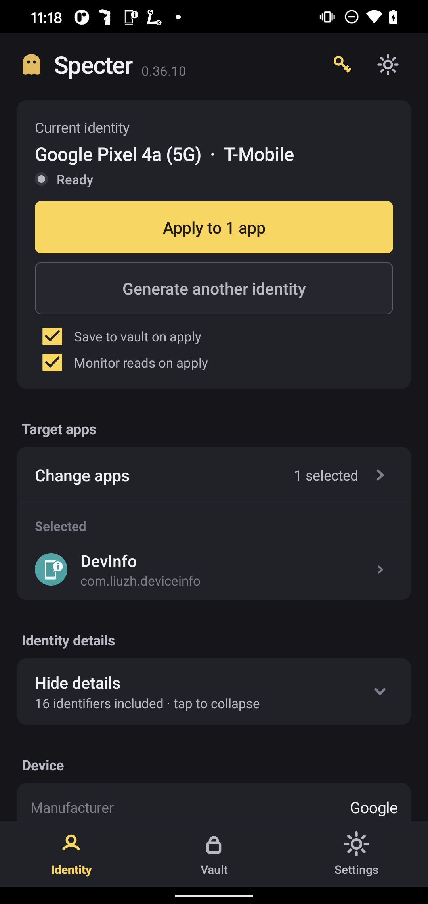
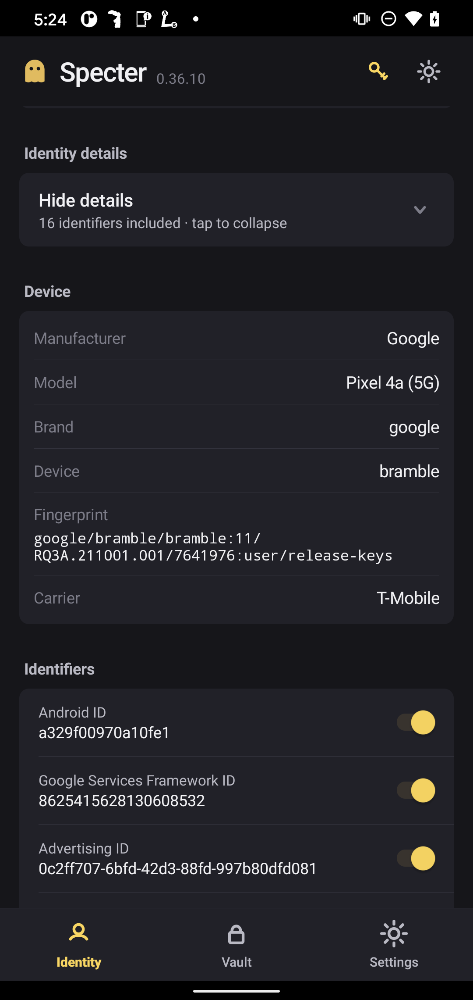
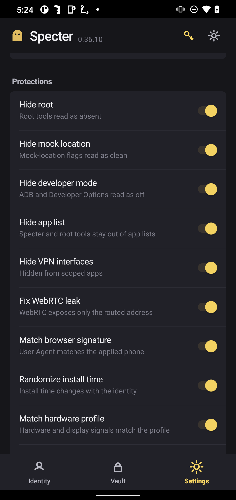
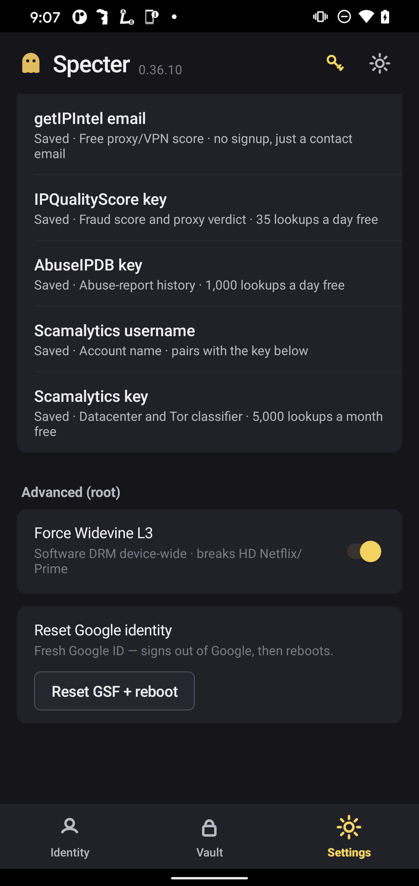

Every account gets a device that never existed.
Specter generates a complete, internally‑consistent Android device profile for each signup - then proves it on‑device. The guarantee the paid tools broke: no identifier is ever reused.

Claims you can check yourself.
The hero makes strong claims. Here’s the measured evidence behind them - checked on‑device and under test.
The spoofed Build.* fields and their mapped ro.* aliases read the same value on both the LSPosed (Java) and Zygisk (native) path - an on‑device dual‑read probe confirms it.
Across 5,000+ generated identities: zero repeated identifiers. A file‑locked ledger checks every id before it’s handed out - race‑safe across concurrent processes.
The module (Java) and the core (Python) consume the seeded RNG in identical order, so the same seed yields identical output - enforced by an automated parity test.
Key guarantees are under automated tests; external‑reviewer findings were fixed with regression tests. See it verified →
Coherent and fresh, so nothing cross‑links.
Fraud stacks cluster accounts by device, not by name. One reused id, or an impossible hardware combo, links your accounts and gets them removed for “coordinated abuse.”
Specter gives every account a unique, internally consistent device. No repeated identifier. No contradictory field. No shared thread to pull.
Generate. Apply. Verify.
One coherent profile per signup, not a field-by-field toggle. Fingerprint matches the build. IMSI matches the carrier. SoC matches the GPU. Applied through LSPosed + Zygisk, then read back by a probe.
Generate a coherent identity
Choose your device, or let Specter pick at random. Recent flagships are in the catalog now, the Pixel 9, Pixel 8 Pro and Galaxy S24, so an Android 16 account no longer has to wear an old Pixel 4. Every dependent signal is derived to match: model, radio, bootloader, kernel, RAM, display. An incoherent combo is itself a flag. Specter never ships one.
01Apply on‑device
Two layers, both read paths. LSPosed hooks the Java Build.* APIs. A Zygisk layer covers the native ro.* props an SDK reads through libc. Per‑app, reversible.
02Prove it read back
A probe reads every spoofable API back, Java and native side by side. If a value leaks the real device, you see it. No trusting the UI.
03A whole identity, not a spoofed field.
Fraud SDKs hash ~30 hardware and OS signals into one composite. Set the IDs alone and that composite stays constant across your accounts. Specter sets the composite signals too.
Coherent by construction
Fingerprint ↔ build, IMSI ↔ carrier, SoC ↔ GPU, board ↔ hardware. Enforced and unit‑tested. A Galaxy A01 can't wear an S21 bootloader.
30+ signals alignedNever‑reuse ledger
Every issued id is logged to a file‑locked ledger and checked before reuse. Race‑safe. 5,000+ generations, zero collisions.
the guarantee the paid tools brokeAppData login vault
Clone the device and the login. Save a session, restore it later, and the app opens already signed in. Captured on‑device, linked to its fingerprint. Export both as one bundle.
app‑agnostic captureExit‑IP reputation
A clean device on a burned proxy still draws friction. The built‑in checker grades a proxy exit before you assign it: fraud score, VPN/abuse flags, ASN, blacklist sweep. Timezone auto‑aligns to the exit.
Try the live checker →Deep protections
Root, mock-location, developer-mode, VPN interfaces and the app list read clean to scoped apps. WebRTC exposes only the routed address. The browser User‑Agent matches the applied phone. The Widevine MediaDrm device id reads a fresh value per identity, not your hardware id.
10+ togglesOn‑device verification
A harness reads back what the target app actually stored: coverage, rotation across launches, backup round‑trip, leak audit vs OS ground truth. Fails loud, never false‑passes.
measure, don't assumeOne-tap setup, one-tap check
Set up everything installs every layer and reboots - native, LSPosed scope, OTA block, Widevine L3. Check protection status then verifies it in one tap: setup, hooks, location, network. A misconfig shows red, never a silent false-OK.
no hand-installing modulesOne-tap in-app updates
The app pulls the latest release and installs it over itself through root. Your activation and saved vault carry across untouched. No hunting for an APK on every release, and a link to the full releases page is one tap away.
no manual re-downloadsRead back, not promised.
Real screens from the on‑device app. Every value shown is generated - a throwaway identity, not a real account.
One tap to apply
Generate → apply to a scoped app → save to the vault.

Coherent, down to the fingerprint
Model, brand, device, fingerprint, carrier and 16 identifiers - all aligned.

The signals SDKs actually read
Root, mock, dev‑mode, WebRTC, UA, hardware - matched or hidden.

Built‑in reputation + root control
Four IP-reputation sources with keys shipped in - no signup needed, add your own to override - plus root‑level Widevine L3 and Google‑ID reset.
Every identity, organized and restorable.
A fingerprint clones the device; an AppData save clones the login. Save both together and bring an account back exactly as it was - on the same phone, or exported to another.
- Named by whose it is. Each saved login is titled by the identity it belongs to - not a bare timestamp - so you always know which account you're restoring.
- App‑first, one‑to‑many. Logins group by app, and one identity can hold several logins. Restore picks exactly which one, never guesses.
- Export & import. Move a fingerprint and its login to another phone as a single portable bundle.
- Honest about limits. A same‑device restore always works; the app tells you plainly when a keystore-locked login can't cross devices.
Hide the tunnel. Vet the exit.
A coherent device behind a burned or leaky proxy still gets flagged. Specter covers both sides: it hides that you are tunnelling at all, and it grades the exit IP before you ever put an account on it.
- Hide the tunnel. Scoped apps cannot tell you are on a proxy or VPN. No VPN network interface shows up, and WebRTC hands back only the routed address, never your real local IP.
- Timezone follows the exit. The device timezone auto-aligns to the proxy exit IP, so the location signals agree with where the IP says you are.
- Vet before you assign. The built-in checker grades a proxy exit before you use it, so a flagged or burned IP never touches an account.
- Four sources, keys included. IPQualityScore, Scamalytics, AbuseIPDB and ip-api are wired in with keys shipped. No signup, nothing to configure. Add your own to override.
Built against the tool it replaces.
Specter grew out of GeerGit - we built on its hook surface, then fixed the identifier-reuse bug that started this project. Here is how it stacks up against the real crop of Android device-spoofers we pulled apart and measured: GeerGit, Glitch, Mirage and byedentity.
Scroll the table sideways on a narrow screen, or focus it and use the arrow keys.
| Capability | Specter | GeerGit | Glitch | Mirage | byedentity |
|---|---|---|---|---|---|
| Native ro.* prop path (libc, not just Java) | Zygisk native | Java only - native leaks | Java only - native leaks | Java only - native leaks | Root resetprop, device-wide |
| On-device read-back proof | Probe harness | Trust the UI | Trust the UI | Trust the UI | Trust the UI |
| Hides itself + the root stack from the app list | App + binder gate | Not advertised | Not advertised | Not advertised | Not advertised |
| No identifier ever reused | Ledger-enforced | Reused a stale id (v2.9.6) | Not advertised | Not advertised | Regenerates, no ledger |
| Cross-field coherence, enforced | Tested invariants | Leaves hardware real | Partial | Partial | Build/SoC left real |
| DRM / Widevine device id | Spoofed + L3, per-app | Real - L1 leaks | Not advertised | Not advertised | Root mount, device-wide |
| Browser UA + WebRTC | Matched, WebView WebRTC filter | Not advertised | Not advertised | Not advertised | Not advertised |
| App login / session vault | AppData vault | Not advertised | None | None | Not advertised |
| Exit-IP reputation built in | 4 sources + TZ align | Not advertised | None | None | Phones home to its own server |
| Multi-country SIM | 44 countries | US default only | Not advertised | Not advertised | Not advertised |
| GPS / location coordinates | By design: Lockito | Built in | Built in + live | Built in | Not advertised |
Competitor data is from our own decompilation of each app (jadx + strings, 2026) plus its public notes. "Not advertised" means the tool does not claim the capability, not that it is provably absent. GPS is a deliberate split - Specter pairs with Lockito rather than bundling a coordinate mocker.
Necessary, not sufficient - and honest about it.
Specter owns the device layer completely. It does not pretend to own the ones it can't.
The two injection layers
LSPosed (Java): hooks Build.* fields and their SystemProperties aliases, per‑app, gated on the module's scope.
Zygisk (native): an inline hook on __system_property_get so a fingerprinter reading a prop through libc gets the spoofed value on the native path too - the blind spot Java‑only tools leave open. The probe confirms Java and native agree, field by field.
Coherence is the whole point
Fraud SDKs derive a composite from ~30 hardware/OS signals. Set only the IDs and that composite stays constant across your “different” accounts - a perfect linker. Specter sets the composite signals (bootloader, radio, kernel, board, hardware, RAM, display) so they align with the one chosen device. Coherence is enforced by cross‑field validators and Java↔Python byte‑parity tests.
The ceilings no device tool can cross
Account linking has three layers; Specter is one. Identity - a platform that re-verifies with a live selfie + gov ID needs a distinct real identity per account; no spoof beats a selfie. Location & behaviour - observed GPS and driving telematics need their own plausible, self-consistent motion. Specter gives you a clean, coherent device and ties the timezone to the proxy exit; the proxy, GPS and identity are yours. We say this plainly rather than imply a device tool is enough.
What the login vault can and can't carry
The AppData capture is app‑agnostic - it takes the whole app data dir (databases incl. the SQLite WAL where live tokens sit, shared_prefs, files, WebView cookies). A same‑device restore always works. Moving a login to a different phone works for plaintext-token apps; a login an app locked to the device keystore can't decrypt elsewhere, because that key is hardware-bound and can't leave the chip. Honest by design.
Straight answers.
The things worth knowing before you commit - including what Specter deliberately does not claim.
Which phones does it work on?
A rooted Android phone with Magisk (Zygisk) and LSPosed.
The device pool is US-market (Samsung, Google, Motorola, LGE). Pick from 44 countries for the SIM: carrier, phone number, locale and timezone.
Everything runs on the phone - no computer or PC connection needed.
Do I need a computer running?
No. The app is standalone - it generates identities, applies them, saves logins and verifies, all on the phone.
No desktop app, no USB cable, no PC connection while you use it.
Is it hard to set up?
No. One tap - Set up everything - installs every layer and reboots: native, LSPosed scope, OTA block, Widevine L3.
A second tap - Check protection status - verifies it all: setup, hooks, location, network. A misconfig shows red, so you are never falsely reassured.
Is it detectable?
An app can check two things: the device signals, and whether a spoofing/root tool is on the phone. Specter covers both.
Signals read spoofed. Every field returns the fake value on both read paths - Java (LSPosed) and native libc (Zygisk). An on‑device probe reads them back, so a leak is measured, not assumed.
Specter hides itself. Scoped apps can't see Specter, LSPosed, root managers or other spoof tools in the installed‑app list. It hooks AppsFilter in system_server (the binder path an SDK uses) plus the per‑app PackageManager queries - modeled on HideMyApplist.
The ceiling, plainly. No device tool beats a server‑side identity check (live selfie + gov ID) or account‑linking from location & behaviour. Those are separate layers - bring your own proxy, GPS and identity.
How is it different from GeerGit and other spoofers?
It was reverse-engineered from GeerGit's own hook surface, then closed the gaps behind the failures it documented - chiefly a never‑reuse ledger (a reused identifier is what links accounts), enforced cross‑field coherence, native ro.* prop coverage (not Java‑only), an app login vault, built‑in exit‑IP reputation, and an on‑device verification harness. See the comparison above.
Do I need to know how to code?
No. Once the module is installed, everything - generate, apply, save/restore a login, verify, check an IP, activate - is driven from the on‑device app.
Will a saved login move to another phone?
On the same phone, the captured login comes back intact. Moving a login to a different phone works for apps that keep a plaintext token; an app that locks its login to the device keystore can't decrypt it elsewhere, because that key is hardware-bound and can't leave the chip. The app tells you plainly which case you're in - no false promises.
How do I get access?
Message @pooks11 on Telegram.
The first week is free. After that it's $20/month per device.
I verify your device and issue a signed activation code.
Licensed per device. Activated in a tap.
A device‑bound licence - one phone per code.
Free for the first week, then $20/month per device.
Message me on Telegram and I issue your code, usually same day.
- Device‑bound activation. A signed code binds to one phone's hardware id - verified by both the Java and native layers before anything is applied.
- Free 1‑week trial. Then $20/month per device - longer terms on request.
- Runs on the phone. Generate, apply, save logins and verify - all on‑device. No computer, no cloud, no telemetry.
- Tested, not trusted. 300+ Python tests, a JVM suite, and Java↔Python byte‑parity keep every build honest.
- Public on GitHub. Releases, docs and changelog are public, so you see exactly what ships.
- Magisk or KernelSU. Magisk is the tested path. KernelSU, SukiSU and APatch are supported too. The app points you to NeoZygisk, the Zygisk provider LSPosed needs there.
Requires a rooted phone with Zygisk + LSPosed
Give every account a clean device.
Coherent by construction. Verified on the glass. Never reused.
Requires a rooted Android phone with Zygisk + LSPosed · US device pool, 44-country SIM · runs entirely on the phone